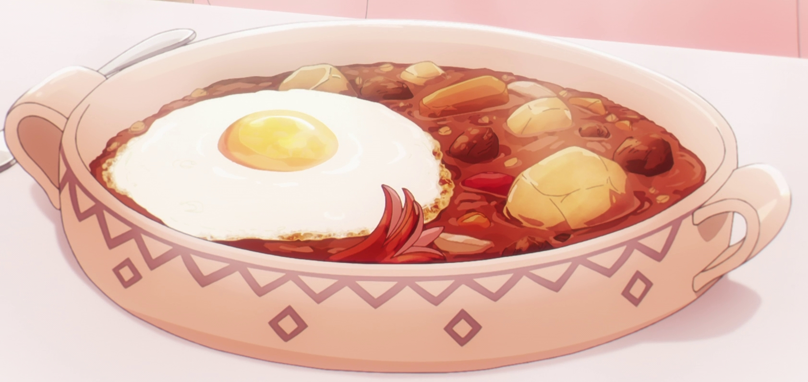

Yor's Stew Recipe

Description
This recipe is inspired by the anime known as SPY X FAMILY, which made it's debut in 2022. It's a recipe made by
one of the main characters YOR, who is known for being a terrible cook. She became really desperate and wanted to learn to cook for her
family. So she asked her friend to teach her and in the end, Yor realised that even though she is a terrible cook, she can make a amazing stew.
It's a central European dish filled with meat, veggies, paprika etc. One of the main ingredients is a dollop of sour cream, which really
brings the whole dish together.
This image is from the anime itself, so of course your stew will look a litle more realistic, unless you have some superpowers.
Ingredients
- 1kg beef
- 1 onion
- 1 wiener sausage
- 1-2 eggs
- 1-2 potatos
- 0.5 tbsp. of caraway seeds
- 0.5 tbsp. of dried majoran
- 4 tbsp. of swett Hungarian paprika
- 1 tbsp. of tomato paste
- 0.5 tbsp. of vinegar
- 1 tsp. of salt
- 2 bay leaves
- 1.5 tbsp. of sour cream
- 3 cups of water
- 3 pats of butter
tbsp. = table spoon
tsp. = tea spoon
Steps
- Cut the beef shank into cubes, cut onions into nice slivers and cut the wiener sausage into bite-sized pieces
- Turn the stove on to medium heat with the pot on
- Add one pat of butter and once the butter has melted, add beef chunks to brown it on all sides
- Once beef has browned, remove it and put in it a bowl for later, clean the pot and save all the flavour left and add it to the beef
- Now lets caramelize onions, make sure you have the stove on medium heat, add 1 pat of butter and once melted, add the onions
- Make sure not to burn the onions, stir it and wait until they are slightly brown
- Once the onions are brown, add tomato paste, majoram and caraway seeds
- Stir the content to toast the seasoning
- Add the Hungarian paprika and stir quickly
- Add 1 cup of water and stir again
- Add vinegar and keep stiring
- Once all the flavour comes altogether, add the removed beef with the beef juice
- Add wiener sausage, bayleaves and salt and stir it all up
- Add 1 cup of water
- And the final and most important ingredient, the sour cream. Remember to keep stiring to mix all the ingredients together
- Cover the pot and simmer on low heat for 3 hours
- To meld all the flavours together, it's better to leave the stew in fridge overnight
- When you are ready to serve the stew, serve it with a boiled potato and fried egg to garnish the dish. Enjoy Yor's best stew!
Source
SPY X FAMILY - Make YOR'S TASTY STEW
Back to home page